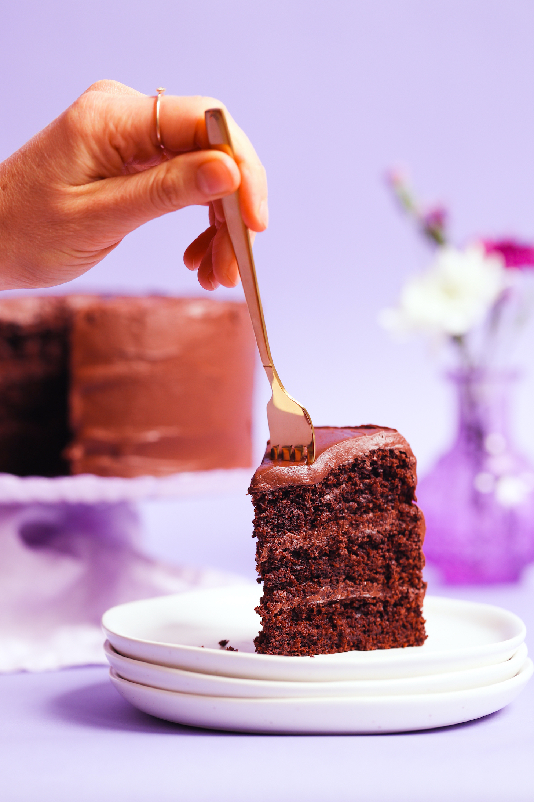

The BEST Gluten-Free Chocolate Cake!

The BEST Gluten-Free Chocolate Cake (Vegan, 1 Bowl!)
Fluffy, moist, decadent gluten-free chocolate cake made in 1 bowl! It’s
also undetectably vegan, grain-free, and naturally sweetened!
Ingredients
- 1 cup almond flour (we like Wellbee’s)
- 1 cup coconut sugar, sifted if clumpy (we like Supernatural)
- 1/2 cup potato starch (NOT potato flour)
- 1/3 cup cocoa powder, sifted if clumpy
- 1/4 cup tapioca starch (also called tapioca flour)
- 3 Tbsp flaxseed meal (ground flax seeds)
- 1 tsp baking powder
- 3/4 tsp baking soda
- 1/2 tsp sea salt
-
1/4 tsp
xantham gum
- 2/3 cup water
-
1/4 cup avocado oil (or other neutral-flavored oil such as refined
coconut oil)
- 1 tsp vanilla extract
Instructions
-
Preheat your oven to 350 degrees F (176 C) and lightly grease an 8-inch
round cake pan with oil or line a standard-size muffin tin with paper
liners. Set aside.
-
To a medium mixing bowl, add all the dry ingredients (almond flour,
coconut sugar, potato starch, cocoa powder, tapioca starch, flaxseed
meal, baking powder, baking soda, sea salt, and xanthan gum). Whisk well
to combine.
-
Next, add the water, oil, and vanilla extract. Whisk thoroughly until no
flour streaks remain. Pour the batter into your prepared baking pan.
-
Place in the preheated oven and bake for 28-32 minutes (for an 8-inch
cake) or 18-20 minutes (for cupcakes), or until a toothpick inserted
into the center comes out mostly clean (with only a few crumbs).
-
Let the cake cool in the pan for 10 minutes. To remove from the cake
pan, run a dull knife around the edge of the pan to loosen the cake.
Then place a plate or cooling rack on top and quickly invert. Allow to
cool completely (~1 hour) before frosting and serving!
-
This cake pairs well with our Vegan Chocolate Ganache Frosting, Coconut
Whipped Cream, Fluffy Vegan Peanut Butter Frosting, Vegan Strawberry
Frosting, or Chocolate Avocado Frosting.
-
Store leftovers lightly covered at room temperature for up to 2-3 days*,
in the refrigerator for 4-5 days, or in the freezer for 1 month. Cake
can be baked ahead and frozen unfrosted. Let thaw completely at room
temperature before serving.